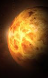

VÊNUS
Vênus é o planeta que brilha mais no céu noturno e é conhecido como a “estrela da manhã” ou “estrela da tarde”. Mas não se engane pelo seu brilho! A superfície de Vênus é um verdadeiro inferno, com temperaturas que podem derreter chumbo, chegando a impressionantes 470°C! E o pior? Sua atmosfera é tão densa e composta por dióxido de carbono que a pressão é 90 vezes maior do que na Terra, o que faz com que o planeta seja um dos lugares mais hostis do sistema solar. Se você curte desafios extremos, Vênus é o planeta que vai te deixar boquiaberto!
Vênus é o planeta mais quente do sistema solar, apesar de não ser o mais próximo do Sol. Sua atmosfera espessa cria um efeito estufa tão potente que transforma o planeta em um forno gigante. Além disso, Vênus tem um dia muito longo: leva mais de 243 dias terrestres para completar uma rotação sobre seu eixo, mas apenas 225 dias para dar uma volta ao redor do Sol. E, para completar, o planeta gira de forma retrógrada, o que significa que o Sol nasce no oeste e se põe no leste – bem diferente do que estamos acostumados!
Material de Estudo